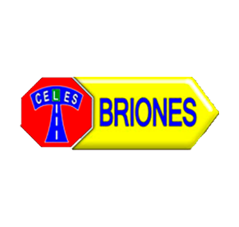
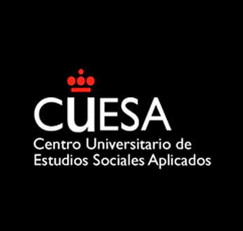
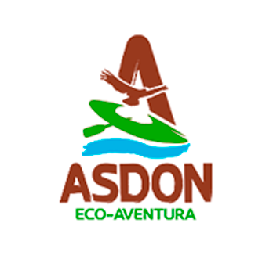
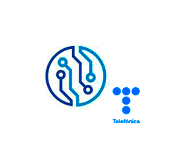
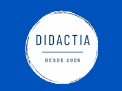
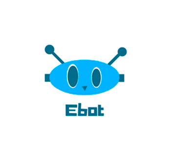
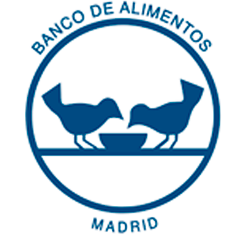
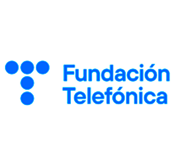

Sobre mí
Testimonios
Me tocó ser la supervisora de las Prácticas Curriculares de Alejandro y, puedo decir con certeza, que es un excelente profesional, incluso un diez como persona. Siempre está dispuesto a todo, incluso a ayudar a quién lo necesite. Él sabe que LCRcom es su casa
Rita Bereczki - LCRcom
rita.bereczki@lcrcom.es
He tenido la oportunidad de trabajar con Alejandro en un nuevo proyecto. Muy buena actitud y ganas de trabajar, aprender y crecer laboralmente. Buena relación con sus compañeros y dispuesto siempre a colaborar
Manel Puntí - CEO de Algam Ibérica
mpunti@algamiberica.com
Un gran compañero, en quien se puede confiar y con quien se puede trabajar a gusto. Sabe cuál es su función y si tiene que preguntar a los que llevamos más años que él en la empresa, pregunta sin tapujos
Ruth García Noguera - Telefónica
ruth.garcianoguera@telefonica.com
Al principio, yo veía que Alejandro encontraba muy burocrática y aburrida la ingeniería preventa, pero en función pasaban los días, se fue adaptando y fue encontrando la pasión por ello. Es normal y entendible que pasen estas situaciones en ingeniería preventa
Javier Luis López - MdTel
javier.luis.lopez@mdtel.esConocí a Alejandro porque le di formaciones de la Meet IP. La verdad, es una persona muy perseverante e inteligente, pone los cinco sentidos para enterarse bien y, también, le pone lógica e ingenio al problema que le surge
Álvaro Salvador - LCRcom
alvaro.salvador@lcrcom.es
Soy el supervisor de la parte de Corporate de IOT - Telefónica y, por tanto, de Alejandro. He de decir, que salvo algún pequeño despiste que ha tenido, en general, es un trabajador que cumple con todas las ofertas que le llegan, tiene iniciativa, es hábil de mente y frente a problemas que surgen, siempre tiene una salida
Eduardo Saiz Colón - Telefónica
eduardo.saizcolon@telefonica.comEs una gran persona y un estupendo compañero. Siempre se puede contar con él, es bastante trabajador, es creativo e intenta crear buen ambiente en el equipo
Pablo Álvarez - LCRcom
pablo.a.a1986@gmail.com
Álex siempre está dispuesto a ayudarte. Le encanta el cacharreo de los Hardware, incluso del software y la programación. Le gusta ir más allá de la oferta en sí
Dejando el trabajo a un lado, es una persona que sabe divertirse y disfruta como se debe (con cabeza obviamente). Buenas fiestas nos hemos echado Irene, Rafa, Miguel Ángel, él y yo
Álvaro Contreras del Río - Telefónica
alvaro.contrerasdelrio@telefonica.com
Descripción profesional
Destaco en:
- Ser resolutivo
- Ser creativo
- Ser persistente
- Adaptabilidad a nuevos proyectos empresariales
Descripción personal
Soy una persona proactiva que le gusta alcanzar metas, emprender y superar cada bache de la vida.
Nací el 30 de marzo de 1997, en Madrid (España).
Me encanta viajar, descubrir nuevas culturas, conocer nuevas personas y tener diversas experiencias a lo largo del mundo. Además de hacer deporte, socializar con amigos y tener una buena alimentación y equilibrada.
Tengo el permiso de conducir y coche propio.
Mi Experiencia Profesional
-
2022
-
Septiembre
Empiezo en MdTel
Puesto: Ingeniero preventa audiovisual
Lugar: Madrid, España
Sector: Ingeniería y Técnica
Tipo de contrato: Jornada completa
Ver contrato: Pedirlo
Ver nóminas: Pedirlas
Sueldo: Consultarlo
Funciones:
- Integración de sistemas audiovisuales a través de diferentes proveedores y fabricantes para conseguir una solución integral final
- Diseño y desarrollo de la solución integral final a través de Visio, AutoCAD y Cadna A
- Estudio acústico del nivel sonoro y de la reverberación sobre el espacio a diseñar y construir audiovisualmente
- Organización de ofertas a través de SalesForce, SharePoint y Excel
- Comunicaciones con clientes, proveedores y fabricantes a través de email
Teléfono de contacto: +34 91 334 61 00
Correo electrónico: clientes@mdtel.es
Domicilio social: Calle Manuel Tovar, 38, Madrid 28034, Madrid, España
-
2023
-
Marzo
Acabo con MdTel
Debido a que Telefónica Tech me ofrecía mejores condiciones para el mismo puesto
-
Empiezo en Telefónica Tech
Marzo

Puesto: Ingeniero corporate-integración audiovisual
Lugar: Distrito Telefónica Edificio Oeste 1, Madrid, España
Sector: Ingeniería y Técnica
Tipo de contrato: Jornada completa
Ver contrato: Pedirlo
Ver nóminas: Pedirlas
Ver fondo de pensiones: Pedirlo
Guía técnica de la empresa: Ver online
Sueldo: Consultarlo
Funciones:
- Integración de sistemas audiovisuales a través de diferentes proveedores y fabricantes para conseguir una solución integral final
- Diseño y desarrollo de la solución integral final a través de Visio, AutoCAD y Cadna A
- Estudio acústico del nivel sonoro y de la reverberación sobre el espacio a diseñar y construir audiovisualmente
- Organización de ofertas a través de SalesForce, SharePoint y Excel
- Comunicaciones con clientes, proveedores y fabricantes a través de email
Mi presencia en Ferias de Empresa gracias a Telefónica: Feria Bitam (en noviembre de 2023) y Feria ISE (en enero de 2024)
Vídeo del Metaverso de Telefónica: Ver online
Catálogo 2024 de los nuevos Atriles Digitales de Telefónica: Ver online
Teléfono de contacto: +34 91 592 05 09
Correo electrónico de contacto 1: telefonicaiot@telefonica.com
Correo electrónico de contacto 2: cristina.velazquezurenda@telefonica.com
Correo electrónico de contacto 3: cristina.patinogarcia@telefonica.com
Correo electrónico de contacto 4: preguntanos_peopleiotbd@telefonica.com
Domicilio social: Ronda de la Comunicación Oeste 1, Madrid 28050, Madrid, España
-
2024
-
Acabo con Telefónica Tech
Febrero
Debido a que me ofrecieron realizar proyectos de ingeniería de telecomunicaciones en Mallorca y Barcelona, viéndolos como una gran oportunidad para no estancarme, salir de mi zona de confort, aprender nuevas habilidades y tener nuevas experiencias profesionales en diferentes ramas de las telecomunicaciones


Mis Pasantías, Proyectos en Empresas y Experiencias Erasmus+
-
2021
-
Septiembre
Pasantía en LCRcom

Puesto: Ingeniero NOC de Telecomunicaciones e IP
Lugar: Madrid, España
Sector: Tecnologías de la Información
Ver contrato: Pedirlo
Ver nóminas: Pedirlas
Memoria final de las Prácticas Curriculares: Pedirla
Nota final de las Prácticas Curriculares: 9
Acuerdo entre: LCRcom - URJC - Yo
Manuales Meet IP:
- Configuración de Yealink: Ver online
- Extensiones: Ver online
- DDI: Ver online
- Grupo Salto: Ver online
- Nomenclaturas para audios: Ver online
Formación SIP: Ver online
Sueldo: Consultarlo
Funciones:
- Programación y configuración de Switches CISCO y Routers MikroTik
- Configuración y puesta en marcha de voz IP del sistema
- Organización de la Meet IP
- Administración de bases de datos SQL
- Rastreo de paquetes IP con Wireshark
- Solución del ruido ocasionado en las llamadas telefónicas por medio de la Meet IP
- Configuración de datos en la nube
- Configuración y programación de la red
- Testeo QA con JIRA y Postman
- Direccionamiento IP
- Ticketing de incidencias con Heos y Teki
Teléfono de contacto: 91 737 77 77
Correos electrónicos: rgpd@airenetworks.es, rrhh@lcrcom.es, rrhh@lcrcom.net y rrhh.comunicados@lcrcom.es
Domicilio social: C/Fernando Rey, 8, Pozuelo de Alarcón 28223, Madrid, España
-
2022
-
Febrero
Fin de la pasantía en LCRcom
Me ofrecieron continuar y un contrato de trabajo indefinido a jornada completa, pero debido a que tenía que irme de Erasmus+ a Novi Sad (Serbia), tuve que rechazarlo
-
Experiencia Erasmus+ (en inglés)
Febrero
Posición: Estudiante de Ciencias, Tecnología e Ingeniería
Lugar: Novi Sad, Serbia
Institución: Facultad de Ciencias Técnicas (FTN) - Universidad de Novi Sad (UNS)
Duración: 1 semestre (6 meses)
Remuneración: 200 € netos / mes
Experiencia realizada gracias a: UNS y URJC
Asignaturas (30 ECTS):
- Informática II <=> Fundamentals in Programming ==> Nota: 8.5
- Protocolos para la Transmisión de Audio y Vídeo en Internet <=> XML & WEB Services ==> Nota: 6.5
- Tratamiento Digital de la Imagen <=> Digital Image Processing ==> Nota: 5.5
- Gráficos y Visualización en 3D <=> Energy & Renewable Energy Sources in Rural Areas ==> Nota: 9.5
- Laboratorio de Tecnologías Audiovisuales en la Web <=> Strategic Planning in Postal Traffic & Telecommunications ==> Nota: 9.5
Libro del Erasmus+: Ver online
Tarjeta ESN Oficial: Ver online
Tarjeta de Transporte de Novi Sad: Pedirlo
Teléfono de contacto 1: +381 21 485 2056
Teléfono de contacto 2: +34 91 665 50 60
Correo electrónico 1: darkoste@uns.ac.rs
Correo electrónico 2: iro.ftn@uns.ac.rs
Correo electrónico 3: ana.arboleya@urjc.es
Dirección: Dr Zorana Đinđića 1, Novi Sad 21000, Vojvodina, Serbia
-
Fin de la Experiencia Erasmus+
Julio
-
2024
-
Febrero
Proyecto Acústico en Mallorca
Puesto: Ingeniero Acústico Arquitectónico y Ambiental
Idioma: Inglés y Español
En colaboración con: Ayto de Inca, URJC, Banco Santander y Macústica
Tiempo total: Febrero - Mayo
Sector: Acústica Arquitectónica y Ambiental
Ver contrato: Pedirlo
Ver nóminas: Pedirlas
Funciones:
- Medición y evaluación sonométrica de espacios y establecimientos
- Realización de mapas de ruido a través de Cadna A
- Calibración de los sonómetros
- Realización de informes acústicos con Certificación ENAC
- Entender, poner en práctica y cumplir el Real Decreto 1367/2007
- Entender, poner en práctica y cumplir el Código Técnico de Edificación (CTE) de las Islas Baleares
- Entender, poner en práctica y cumplir: la ISO 14001, la ISO 9001 y la Autorización Ambiental Integrada (AAI) del Boletín Oficial de las Islas Baleares (nº 52 del día 08/04/2006)
Experiencia con el Aislamiento Acústico: Ver online
Experiencia con la Evaluación Acústica de una Planta de Residuos de Mallorca: Ver online
Experiencia con la Acústica Arquitectónica y Ambiental: Ver online
Correo electrónico de contacto: cooperacion@urjc.es
Dirección del lugar: Inca, Mallorca, Illes Balears, España
-
Mayo
Fin del Proyecto
-
Proyecto de Control AV en Barcelona
Junio
Puesto: Ingeniero de AV Control de Sistemas de Videoconferencia
Idioma: Inglés y Español
En colaboración con: Ayto de Barcelona, URJC, Banco Santander, Algam Ibérica y Harman Pro
Tiempo total: Junio - Septiembre
Sector: Ingeniería de AV y control de sistemas
Ver contrato: Pedirlo
Ver nóminas: Pedirlas
Funciones:
- Programación AV de salas de control y videoconferencia con Muse Automator de AMX, basado en JS y Python
- Configuración del sistema de sonido de las salas a través de Audio Architect y DSPs
- Realización de diagramas a través de Draw.IO
- Estudio acústico de salas a través del software DDA JBL
- Entender el funcionamiento de proyectos acústicos y de salas de control AV
Viaje de formación de 4 días a Harman Pro (Reino Unido): Ver online
Documento de asistencia en Harman Pro: Ver online
Acuerdo entre Algam Ibérica y Harman Pro: Suministro y programación de equipos JBL, AMX, HiQnet, BSS y Samsung
Teléfono de contacto: +34 934 221 811
Teléfono de Harman Pro: +44 1 904 343 142
Correo electrónico de contacto: mpunti@algamiberica.com (CEO de Algam Ibérica)
Correo electrónico de Harman Pro: adam.findlay@harman.com (Director de Ingeniería de Ventas EMEA en Harman)
Dirección del lugar: C/ de Garcilaso, 11, Sant Andreu, 08027 Barcelona
Dirección de Harman Pro: HARMAN, Westside, London Road, Hemel Hempstead HP3 9TD, Reino Unido
-
Fin del Proyecto
Septiembre
Mi Formación Académica
-
2000
-
Septiembre
Estudiante de Infantil y Primaria

Centro Educativo: CEIP Príncipe Don Felipe (En su momento era un CEIP)
Lugar: Boadilla del Monte, Madrid, España
Logo del centro cuando estudiaba en él: Ver online
Revista del 25 aniversario del centro: Ver online
Cursos alcanzados:
- 1º de Educación Infantil: 2000/01
- 2º de Educación Infantil: 2001/02
- 3º de Educación Infantil: 2002/03
- Orla de Graduación de Ed. Infantil (junio 2003): Ver online
- 1º de Educación Primaria: 2003/04
- 2º de Educación Primaria: 2004/05
- 3º de Educación Primaria: 2005/06
- 4º de Educación Primaria: 2006/07
- 5º de Educación Primaria: 2007/08
- 6º de Educación Primaria: 2008/09
- Orla de Graduación de Ed. Primaria (junio 2009): Ver online
Teléfono de contacto del centro: 91 633 16 26
Correo electrónico del centro: secretaria.cp.principedonfelipe.boadilla@educa.madrid.org
Dirección del centro: Calle de Juan Carlos I, 40, Boadilla del Monte 28660, Madrid, España
-
2004
-
Empiezo en el British Council
Septiembre
Lugar: Villaviciosa de Odón, Madrid, España
Revista del centro: Ver online
Cursos alcanzados:
- Nivel Pink: 2004/05
- Nivel Red: 2005/06
- Nivel Yellow: 2006/07
- Nivel Purple: 2007/08
- Nivel Junior 1: 2008/09
- Nivel Junior 2: 2009/10
- Nivel Junior 3: 2010/11
Teléfono de contacto del centro: 91 616 13 46
Correo electrónico del centro: villaviciosa@britishcouncil.es
Dirección del centro: Calle de Santa Ana, s/n, Villaviciosa de Odón 28670, Madrid, España
-
2009
-
Junio
Graduado de Infantil y Primaria
-
Estudiante de la E.S.O
Septiembre

Centro Educativo: IES Profesor Máximo Trueba
Lugar: Boadilla del Monte, Madrid, España
Ver Título Oficial: Pedirlo
Revista del 25 aniversario del centro: Ver online
Cursos alcanzados:
- 1º de la E.S.O: 2009/10
- 2º de la E.S.O: 2010/11
- 3º de la E.S.O: 2011/12
- 4º de la E.S.O: 2012/13
- Orla de Graduación de la E.S.O (junio 2013): Ver online
Teléfono de contacto del centro: 91 632 15 12
Correo electrónico del centro: secretaria.ies.maximotrueba.boadilla@educa.madrid.org
Dirección del centro: Calle de Santillana del Mar, 22, Boadilla del Monte 28660, Madrid, España
-
2011
-
Fin de mi etapa en el British Council
Junio
-
2013
-
Graduado de la E.S.O
Junio
-
Septiembre
Estudiante de Bachillerato
Centro Educativo: IES Profesor Máximo Trueba
Lugar: Boadilla del Monte, Madrid, España
Modalidad: Bachillerato Tecnológico
Ver Título Oficial: Pedirlo
Revista del 25 aniversario del centro: Ver online
Cursos alcanzados:
- 1º de Bachillerato: 2013/14
- 2º de Bachillerato: 2014/15
- Orla de Graduación de Bachillerato (junio 2015): Ver online
Examen de la PAU (Prueba de Acceso a la Universidad) de junio de 2015: Aprobado con un 8 sobre 14
Teléfono de contacto del centro: 91 632 15 12
Correo electrónico del centro: secretaria.ies.maximotrueba.boadilla@educa.madrid.org
Dirección del centro: Calle de Santillana del Mar, 22, Boadilla del Monte 28660, Madrid, España
-
2015
-
Mayo
Graduado de Bachillerato
-
Junio
Apto en el Examen de la PAU
-
Permiso de conducción B
Julio
Incluye: El examen teórico y el examen práctico
Lugar: Madrid, España
Lugar del examen: Centro de Exámenes de la DGT
Dirección: Ctra. Nacional V, Km. 16, 5, Móstoles 28935, Madrid, España
Teléfono de contacto: 91 616 57 10
Correo electrónico: jptm@dgt.es
Autoescuela: Briones
Dirección 1: Ctra. de Majadahonda, 22, Boadilla del Monte 28660, Madrid, España
Dirección 2: Av. Infante Don Luis, 5, Boadilla del Monte 28660, Madrid, España
Teléfono de contacto: 91 632 55 80
Examen teórico: Aprobado en julio de 2015 a la primera, lo que implica 2 oportunidades en el examen práctico
Examen práctico: Aprobado en enero de 2016 a la segunda, empezando las clases de conducir en septiembre de 2015
Profesor de Autoescuela: Jesús
Ver Permiso de Conducción B (incluye AM): Pedirlo. Y como van más de 3 años, tengo el A1 incluido
-
2016
-
Apto en el Permiso de conducción B
Enero
-
Septiembre
Empiezo la Licenciatura en la URJC
Grado: Ingeniería en Sistemas Audiovisuales y Multimedia
Lugar: Campus de Fuenlabrada, Fuenlabrada, Madrid, España
Rama del Grado: Telecomunicaciones
Escuela Técnica de la URJC a la que pertenece el Grado: Escuela Técnica Superior de Ingeniería de Telecomunicación
Ver Título Oficial en español: Pedirlo
Ver Título Oficial en inglés: Pedirlo
Ver Historial Académico: Pedirlo
Ver el Libro de la Licenciatura: Pedirlo
El Grado cuenta con 240 ECTS a cursar, que incluyen:
1. Periodo de Asignaturas: desde septiembre/2016 a junio/2021
2. Periodo de Prácticas Curriculares en Empresa: desde septiembre/2021 a Febrero/2022
3. Periodo de Experiencia Erasmus+ fuera de España (en inglés): desde Febrero/2022 a julio/2022
4. Periodo de desarrollo y presentación del Trabajo de Fin de Grado (TFG): desde septiembre/2022 a julio/2023
Carnet universitario: Pedirlo
Trabajo de Fin de Grado - TFG: Ver online
Presentación del TFG (en PDF): Ver online
Mi tutor de TFG: Ver online
Nota de las Prácticas Curriculares en Empresa: 9
Nota del Trabajo de Fin de Grado: 9.3
Nota media final: 7
Imagen graduado 1: Ver online
Imagen graduado 2: Ver online
Orla de Graduación: Ver online
Teléfono de contacto: 91 665 50 60
Correos electrónicos: fuenlabrada.secretariadealumnos@urjc.es, fuenlabrada.gerencia@urjc.es y grado.ingenieriasam@urjc.es
Dirección: Camino del Molino, 5, Fuenlabrada 28942, Madrid, España
-
2017
-
Curso de Monitor de OTL
Febrero

Centro organizador: ISADIA Aventura
Centro donde se imparte el curso: Universidad Europea de Madrid (UEM)
Lugar: Villaviciosa de Odón, Madrid, España
Ver Título Oficial: Pedirlo
Memoria/Proyecto Final: Ver online
Ver online mi experiencia: Pincha aquí
Teléfono de contacto: 657 51 00 87
Correo electrónico: info@isadia-aventura.com
Dirección: Calle de María Teresa, 11, Madrid 28028, Madrid, España
-
Apto en el curso
Mayo
-
2019
-
Octubre
Curso de Post-Producción AV
Centro que imparte el curso: CUESA (Centro Universitario de Estudios Sociales Aplicados), que pertenece a la Universidad Rey Juan Carlos - URJC
Lugar: Campus de Fuenlabrada, Fuenlabrada, Madrid, España
Rama del Grado: Cine, Medios y Comunicación Audiovisual
Ver Título Oficial: Pedirlo
Herramientas tecnológicas utilizadas: Adobe After Effects (principal), Adobe Premiere, Adobe Photoshop y Adobe Illustrator
Profesor: Santiago Leguey Galán
Nota media final: 6
Teléfono de contacto: 91 488 79 43
Correo electrónico: centro.cuesa@urjc.es
Dirección: Camino del Molino, 5, Fuenlabrada 28942, Madrid, España
-
Diciembre
Apto en el curso
-
2021
-
Curso de Kayak y Paddel Surf
Abril
Organizado e impartido por: Asdon Aventura
Lugar: Pelayos de la Presa, Madrid, España
Título Oficial: Ver online
Programa del curso:
- Conocimientos básicos de la embarcación
- Manejo práctico de la embarcación
- Explicación como Monitor de juegos y dinámicas utilizando el kayak y/o el paddel surf
- Seguridad en la embarcación
Teléfono de contacto 1: 616 25 04 95
Teléfono de contacto 2: 667 75 96 45
Teléfono de contacto 3: 94 981 62 69
Correo electrónico: info@asdonaventura.com
Dirección: Calle de Las Eras, 8, Poveda de la Sierra 19463, Guadalajara, Castilla-La Mancha, España
-
Apto en el curso
Mayo
-
2023
-
Julio
Graduado de la Licenciatura por la URJC
-
Septiembre
Lugar: Distrito Telefónica Edificio Oeste 1, Madrid, España
Horario: Viernes de 10:00 a 11:00
Ponente: Carlos Medina Gonzalez
Presentación del Curso: Ver online
Contenido del Curso: Ver online
-
Octubre
Curso de Sistemas USB de Crestron
Centro que imparte el curso: Crestron
Lugar: Madrid, Madrid, España
Tiempo total: 23, 24 y 25 de octubre de 10:00 a 13:00
Ver Certificado Oficial: Ver online
Contenido del Curso: Ver online
Esquemas prácticos del Curso: Ver online
Ponente: Óscar García López
Teléfono de contacto: +34 91 769 75 60
Dirección: Calle de Santa Leonor, 65, Edificio E, San Blas-Canillejas, Madrid 28037, Madrid, España
-
Octubre
Apto en el curso de Crestron
-
Noviembre
-
2024
-
Curso de IA generativa
Octubre
Nombre completo del curso: IA generativa enfocada a negocio
Lugar: Online, a través de la plataforma de la E.O.I
Calendario: Del miércoles 2 de octubre al jueves 5 de diciembre
Horario: De lunes a viernes de 10:00 a 14:00
Profesores:
3. Fran Bartolomé Valentín-Gamazo
Contenido del Curso:
Módulo 1: Fundamentos de inteligencia artificial
Módulo 2: Chatbots y técnicas de prompting
Módulo 3: Generación y edición de imagen
Módulo 3: Generación y edición de imagen => Parte 1
Módulo 3: Generación y edición de imagen => Parte 2
Módulo 3: Generación y edición de imagen => Parte 3
Módulo 3: Generación y edición de imagen => Parte 4
Módulo 4: Generación y edición de vídeo
Módulo 5: Generación y edición de audio
Módulo 6: Negocio y marketing con IA
Módulo 7: Productividad con IA
Módulo Transversal: Empleabilidad y competencias digitales
Módulo 8: Ética y regulación de la IA
Módulo 9: Ecosistema Microsoft Copilot
Apuntes del Curso: Ver online
Proyecto del Curso: Ver online
Domicilio social de la EOI: Avenida de Gregorio del Amo, 6, Distrito de Moncloa-Aravaca, 28040 Madrid, Madrid, España
Mis Habilidades Tecnológicas
 Cadna A
Cadna A Netgui
Netgui Wireshark
Wireshark ExpressJS
ExpressJS phpMyAdmin
phpMyAdmin MongoDB No-SQL
MongoDB No-SQL C
C Pascal
Pascal Matlab
Matlab Arduino
Arduino Simulink
Simulink Python
Python Postman
Postman ThunderClient
ThunderClient JIRA
JIRA HTML
HTML View Templates: PUG
View Templates: PUG Github
Github CSS
CSS SCSS
SCSS A-Frame
A-Frame Adobe Photoshop
Adobe Photoshop Adobe After Effects
Adobe After Effects Adobe Premiere
Adobe Premiere Adobe Illustrator
Adobe Illustrator Microsoft Office Suite
Microsoft Office Suite Microsoft Visio
Microsoft Visio Notion
NotionCertificación de habilidades profesionales: Ver online
Test de Competencias Laborales: Ver online
Certificación Dante Audinate (Niveles 1, 2 y 3): Ver online
Certificación Dante Audinate (Dante AV): Ver online
Mis Idiomas


Nivel B2 por British Council
Certificado oficial de Aptis - British Council
Ver Título Oficial: Pedirlo
Comprensión lectora: B2
Comprensión auditiva: B2
Expresión escrita: B2
Expresión oral: B1
Nivel final obtenido: B2 (Sube a C1)
Ver Título inglés para empresas: Ver online

Nivel A2 (en progreso)
Contenido del curso: Ver online
Nivel A1 por la Universidad de Novi Sad
Lo obtuve gracias a un curso que hice durante mi estancia de Erasmus+ en Novi sad (Serbia)
Comprensión lectora: A2
Comprensión auditiva: A1
Expresión escrita: A1
Expresión oral: A1
Nivel final obtenido: A1 (Sube a A2)
Contenido del curso: Ver online

Nivel nativo
El español es mi lengua materna, ya que toda mi familia es española, yo he nacido en Madrid (capital de España) y tengo la documentación que acredita que soy español
Otros idiomas
Por curiosidad, algunas expresiones y vocabulario básico del ruso, húngaro, turco y chino:

Mis proyectos empresariales y/o personales

Otros trabajos
-
2015
-
Septiembre
Empiezo a trabajar en Gin & Ron
Puesto: Shisha & Bartender
Lugar: Villaviciosa de Odón, Madrid, España
Sector: Hostelería nocturna
Tipo de contrato: Jornada completa
Ver contrato: Pedirlo
Instagram del Pub: Ver online
Sueldo: Consultarlo
Funciones:
- Servir copas
- Cobrar a los clientes
- Saber llevar las cuentas
- Tener buena imagen, buena comunicación, saber estar y tener ganas
- Preparar y limpiar las Shishas/Cachimbas/Narguilas
- Preparar cócteles
Teléfono de contacto: 727 78 87 64
Domicilio social: Avenida Príncipe de Asturias, 43 y 45, Villaviciosa de Odón 28670, Madrid, España
Horario de atención al público: de Lunes a Domingo de 21:30 a 03:00
-
2016
-
Junio
Dejo de trabajar en Gin & Ron
-
2017
-
Empiezo a trabajar para Dinamo 8
Junio
Puesto: Monitor de Ocio y Tiempo Libre
Lugar: CEIP Ángel González de Leganés, Madrid, España
Sector: Educación y tiempo libre
Tipo: Campamento urbano de verano (sin pernocta) para niños/as entre 4 años y 12 años
Tipo de contrato: Contrato por hora
Ver contrato: Pedirlo
Sueldo: Consultarlo
Funciones:
- Organización y puesta en marcha de actividades lúdico-educativas
- Organización y puesta en marcha de actividades lúdico-deportivas
- Organización y puesta en marcha de actividades lúdico-competitivas
- Organización y puesta en marcha de actividades lúdico-cooperativas
- Monitor de desayuno, piscolabis y comidas para controlar al grupo de menores
- Resolución de conflictos que surjan
- Proactividad durante la duración de la jornada laboral
- Entretenimiento y organización del tiempo libre del grupo de niños/as asignado
- Enseñanza de valores al grupo de niños/as asignado
- Liderar el grupo de niños/as asignado
Teléfono de contacto: 91 591 49 54
Correo electrónico: info@dnmo.es
Domicilio social: Calle de Mercedes Rodríguez, 11, Madrid 28044, Madrid, España
Horario de atención al público: de Lunes a Viernes de 09:00 a 17:00
-
Dejo de trabajar para Dinamo 8
Julio
-
Septiembre
Me vinculo a Grupo Didáctica
Puesto: Profesor particular a domicilio
Lugar: Área de la Comunidad de Madrid, España
Sector: Educación y formación
Tipo de contrato: Contrato por hora
Ver contrato: Pedirlo
Sueldo: Consultarlo
Asignaturas a impartir:
- Matemáticas de la ESO y Bachillerato
- Física de la ESO y Bachillerato
- Tecnología de la ESO y Bachillerato
- Informática y programación de la ESO y Bachillerato
- Electrotecnia de 4º de la ESO y 1º Bachillerato
Alumnos totales: 15
Teléfono de contacto: 91 591 75 90
Correo electrónico de contacto: info@grupodidactia.com
Sede central de la empresa: Paseo de la Castellana, 194, Madrid 28046, Madrid, España
-
2018
-
Empiezo a trabajar para Encantaria
Julio

Puesto: Monitor de Ocio y Tiempo Libre
Lugar: Broto, Huesca, Aragón, España
Sector: Educación y tiempo libre
Tipo: Campamento de verano con pernocta para chavales/as entre 12 años y 17 años
Tipo de contrato: Contrato por hora
Ver contrato: Pedirlo
Sueldo: Consultarlo
Funciones:
- Organización y puesta en marcha de actividades lúdico-educativas
- Organización y puesta en marcha de actividades lúdico-deportivas
- Organización y puesta en marcha de actividades lúdico-competitivas
- Organización y puesta en marcha de actividades lúdico-cooperativas
- Organización y puesta en marcha de las actividades a realizar cada día
- Resolución de conflictos que surjan
- Trabajo diario con los participantes del campamento, incluso control durante la noche
- Organización y puesta en marcha de excursiones por las cercanías de Broto: Monte Perdido y el Valle de Ordesa
- Enseñanza de valores a los participantes del campamento
- Co-liderar el grupo genérico, junto a los compañeros/as monitores
Teléfono de contacto: 618 46 01 64
Correo electrónico: encantaria@encantaria.com
Sede central de la empresa: Calle de Cabañera Real, 7, Fraga 22520, Huesca, Aragón, España
-
Dejo de trabajar para Encantaria
Julio
-
Septiembre
Empiezo en Academia Donfer
Puesto: Profesor extraescolar presencial de Ciencias y Tecnología
Lugar: Boadilla del Monte y Villaviciosa de Odón, Madrid, España
Sector: Educación y formación
Tipo de contrato: Contrato por hora
Ver contrato: Pedirlo
Sueldo: Consultarlo
Grupos de alumnos:
1. Grupo de 6 alumnos de 1º de la ESO para Matemáticas (L y X - Villaviciosa - 16:30 a 18:00)
2. Grupo de 9 alumnos de 4º de la ESO para física y tecnología (M y J - Boadilla - 17:00 a 18:30)
Teléfono de contacto 1: 91 665 72 56
Teléfono de contacto 2: 91 632 12 52
Correo electrónico: donfer@academiadonfer.com
Dirección de la empresa (Boadilla del Monte): Centro Comercial Giraldo 1, local 19, Calle Trujillo , 2, Boadilla del Monte 28660, Madrid, España
Dirección de la empresa (Villaviciosa de Odón): Centro Comercial Villacenter, local A23, Avenida Príncipe de Asturias, 129, 1º, Villaviciosa de Odón 28670, Madrid, España
-
2019
-
Mayo
Dejo de trabajar en Academia Donfer
-
Empiezo a trabajar en Kalahari R & C
Junio
Puesto: Socorrista de parque acuático INDOOR & OUTDOOR (con su correspondiente curso teórico-práctico de 1 semana)
Programa de trabajo: Summer Work & Travel for 4 months
Lugar: Wisconsin Dells, Wisconsin, Estados Unidos de América
Sector: Seguridad y salud
Tipo de contrato: Contrato por hora
Ver contrato: Pedirlo
Sueldo: Consultarlo
Ver nóminas: Pedirlas
Funciones:
- Vigilar que los bañistas del parque acuático cumplan las normas
- Vigilar que nadie se ahogue y evitarlo si sucediera
- Seguir el protocolo de actuación cuando alguien se está ahogando
- Llevar un orden en la parte de arriba de una atracción, dejando un margen de seguridad entre bañistas
Teléfono de contacto: +1 608-254-5466
Correo electrónico: WIGroups@KalahariResorts.com
Dirección de la empresa: Kalahari Drive, 1305, Wisconsin Dells 53965, Wisconsin, Estados Unidos de América
-
Continuo trabajando en Kalahari
Agosto
Puesto: Dependiente de tienda (con entrevista previa en inglés)
Programa de trabajo: Summer Work & Travel for 4 months
Lugar: Wisconsin Dells, Wisconsin, Estados Unidos de América
Sector: Ventas
Tipo de contrato: Contrato por hora
Ver contrato: Pedirlo
Sueldo: Consultarlo
Ver nóminas: Pedirlas
Tipos de tiendas:
- Tienda de ropa y juguetes para niños/as
- Tienda de ropa de adolescentes y adultos
- Tienda de alimentación, snacks, souvenirs y parafarmacia (ultramarinos)
Funciones respecto a la tienda asignada a despachar (turnos de mañana/tarde rotatorios):
- Conseguir el mayor porcentaje de ventas
- Ordenar y reponer sus artículos
- Mantenerla limpia
- Cobrar a los clientes
- Convencer, aconsejar y ayudar a los clientes
- Conseguir que la experiencia de compra del cliente sea lo más satisfactoria posible
Teléfono de contacto: +1 608-254-5466
Correo electrónico: WIGroups@KalahariResorts.com
Dirección de la empresa: Kalahari Drive, 1305, Wisconsin Dells 53965, Wisconsin, Estados Unidos de América
-
Dejo de trabajar en Kalahari R & C
Octubre
-
Octubre
Empiezo a trabajar para Ebot
Puesto: Profesor de robótica extraescolar presencial
Lugar: CEIP Ágora, Boadilla del Monte, Madrid, España
Sector: Educación y formación
Tipo de contrato: Contrato por hora
Ver contrato: Pedirlo
Sueldo: Consultarlo
Grupo de alumnos:
- Grupo de 15 alumnos de 1º y 2º de la ESO para enseñarles el funcionamiento de la robótica y de la programación a nivel práctico (M y J - 16:30 a 18:00)
Herramientas tecnológicas utilizadas:
- Arduino
- Tinkercad
- Lego Mindstorms
- Scratch
Teléfono de contacto: +34 641 23 30 90
Correo electrónico de contacto 1: administracion@ebot.es
Correo electrónico de contacto 2: extraescolares@ebot.es
Sede central de la empresa: Vivero de empresas de Carabanchel, Calle del Cidro 3, Madrid 28044, Madrid, España
-
2020
-
Marzo
Dejo de trabajar para Ebot

Debido a la Pandemia de la Covid-19
-
2021
-
Empiezo a trabajar para E.I.RyM
Octubre
Puesto: Profesor de informática para adultos
Lugar: Centro Miguel Delibes, Villaviciosa de Odón, Madrid, España
Sector: Educación y formación
Tipo de contrato: Contrato por hora
Ver contrato: Pedirlo
Sueldo: Consultarlo
Grupo de alumnos/as:
1. Grupo de 10 personas de >=65 años que quieren mejorar sus habilidades informáticas para uso diario - Grupo del jueves de 19:00 a 20:00
2. Grupo de 12 personas de >=65 años que quieren mejorar sus habilidades informáticas para uso diario - Grupo del martes de 19:00 a 20:00
Temario impartido:
- Uso del ratón
- Uso del teclado
- Uso del explorador de archivos
- Uso del escritorio de Windows
- Uso del correo electrónico de Gmail
- Uso del software Paint
- Uso de las herramientas de ofimática de Microsoft: Word y PowerPoint
Nombre real de la empresa que me contrata: Estudio Internacional Ritmo y Movimiento
Propietaria de la empresa: Pilar Sánchez Núñez
Teléfono de contacto: +34 91 616 42 45
Correo electrónico: ritmopilar@hotmail.com
Domicilio social de la empresa: Calle de Juan de Borbón, 19, Villaviciosa de Odón 28670, Madrid, España
-
Dejo de trabajar para E.I.RyM
Diciembre
-
2023
-
Junio
Me desvinculo de Grupo Didáctica
Mis Voluntariados nacionales e internacionales
-
2016
-
Voluntariado del Banco de Alimentos (Madrid)
Puesto: Voluntario
Idioma: Español
Tiempo total: Del 18 de noviembre al 20 de noviembre
Horario: De 17:00 a 21:00
Lugar: Mercadona de Villaviciosa de Odón (Ahora La Despensa), Madrid, España
Sector: Alimentación
Funciones:
- Recoger comida no perecedera para gente desfavorecida
- Clasificar la comida según el tipo
- Organizar y planificar el proceso por el que se lleva a cabo
- Cooperar y colaborar con todo el equipo de voluntarios
Ver online mi experiencia: Pincha aquí
Justificante de asistencia: Pedirlo
Teléfono de contacto: +34 91 734 63 83
Correo electrónico de contacto: administracion@bamadrid.org
Domicilio social: Carretera de Colmenar Viejo, Km. 13, 600 (Vía de servicio), Madrid 28049, Madrid, España
-
2021
-
Voluntariado en Falkencamp Döbriach

Puesto: Voluntario, viajero y mochilero
Agencia de contacto: Worldpackers
Idioma: Inglés
Tiempo total: Del 15 de agosto al 5 de septiembre
Sector: Turismo
Funciones (lo que ofrezco):
- Controlar y alquilar las bicicletas a los huéspedes
- Controlar y alquilar los kayaks (canoas) y los SUPs (tablas de paddle surf) a los huéspedes, utilizados en el lago Millstätter
- Ser bartender en el bar del camping: Heko nights
- Montar, desmontar y limpiar las tiendas de campaña para huéspedes de Falkencamp
- Arreglar y moldear las picas metálicas que sujetan las tiendas de campaña
- Organizar y limpiar el almacén
- Atender en la tienda de bebidas y snacks de la playa del lago
- 5 días de trabajo a la semana (7h/día)
- Hacer que Falkencamp sea un lugar mejor
Funciones (lo que obtengo):
- Alojamiento en habitación privada/compartida
- 3 comidas al día, servido por catering
- Bicicletas a disposición, con reserva previa gratuita
- Consumo de productos del bar gratis
- Desplazamientos a la estación de tren más cercana
- Elección de una prenda/souvenir gratis
- Descuentos en viajes de tren y en restaurantes
- 2 días libres a la semana
Ver online mi experiencia: Pincha aquí
Justificante de asistencia: Pedirlo
Teléfono de contacto: 04246 / 7704
Correo electrónico de contacto: office@feriencamp-doebriach.at
Dirección del lugar: Glanzer Straße, 66, 9873 Döbriach, Carintia, Austria
-
2022
-
Voluntariado en Michaelshof Sammatz
Puesto: Voluntario, viajero y mochilero
Agencia de contacto: Worldpackers
Idioma: Inglés
Tiempo total: Del 3 de agosto al 7 de septiembre
Sector: Ecología y sostenibilidad
Funciones (lo que ofrezco):
- Recogida de alimentos de la tierra y conocer técnicas de agricultura
- Ser pinche de cocina: preparar y envasar pepinos pelados para conservar, pelar patatas y otras hortalizas, ayudar a preparar la comida del día, lavar la vajilla y limpiar la cocina
- Ayudar en la elaboración de pan
- Ayudar en la elaboración de quesos y en su envasado
- Ayudar en la construcción de viviendas
- Ayudar en el mantenimiento de los jardines
- Ayudar al pastoreo de las ovejas y del cuidado y limpieza de todos los animales: vacas, un toro, cerdos, cabras, ovejas y caballos
- Ayudar y ser reponedor en la tienda de alimentación
- 5 días de trabajo a la semana (7h/día)
- Hacer que la ecogranja de Sammatz sea un lugar mejor
Funciones (lo que obtengo):
- Alojamiento en habitación privada/compartida
- Almuerzo diario servido por catering y voluntarios
- Desayuno y cena servido por ti mismo, pero sin coste
- Algunas veces, merienda con café y pastel, lo que se conoce como Kuchen und Kaffee
- Bicicletas a disposición, con reserva previa gratuita
- Desplazamientos a la estación de tren más cercana
- Frutas y hortalizas del día y de la tierra a disposición
- Descuentos en viajes de tren y en restaurantes
- 2 días libres a la semana
Ver online mi experiencia: Pincha aquí
Justificante de asistencia: Pedirlo
Teléfono de contacto: 05858 970 30
Correo electrónico de contacto: kontakt@sammatz.de
Dirección del lugar: Im Dorfe, 11, 29490 Sammatz, Niedersachsen, Alemania
-
2023
-
Voluntariado de la Fundación Telefónica
Puesto: Voluntario
Idioma: Español
Lugar: Edificio de la Fundación Telefónica de Madrid, Madrid, España
Sector: Educación y formación
Nombre del programa: Reconectados
Objetivo principal: Ayudar a la tercera edad a usar sus dispositivos móviles y las nuevas tecnologías de forma más ágil y eficaz
Tiempo total: Los jueves: 5, 12, 19 y 26 de octubre
Horario: De 10:00 a 13:00
Funciones:
- Resolución de dudas
- Enseñar dinámicamente y con mucha práctica
- Tener paciencia y repetir la explicación múltiples veces
Contenidos del programa: Ver online
Presentación del programa: Ver online
Ver online mi experiencia: Pincha aquí
Justificante de asistencia: Pedirlo
Teléfono de contacto: +34 91 498 42 73
Teléfono de visitas guiadas: +34 659 15 80 11
Dirección del lugar: Calle de Fuencarral, 3, Madrid 28004, Madrid, España
-
2024
-
Voluntariado en Ibiza Yoga

Puesto: Voluntario, viajero y mochilero
Idioma: Inglés
Agencia de contacto: Worldpackers
Tiempo total: Mayo - Junio
Sector: Turismo, Hostelería, Espiritualidad y Sostenibilidad
Funciones (lo que ofrezco):
- Ayudar al Chef a preparar el almuerzo
- Encargarse de los Check-In y los Check-Out de los nuevos huéspedes
- Encargarse de la limpieza del Hotel Rural
- Encargarse de la limpieza, orden y adecuación de las habitaciones de los huéspedes
- Hacer la colada del Hotel Rural
Funciones (lo que obtengo):
- Alojamiento en habitación compartida con separación (estilo hippie)
- Almuerzo diario, servido por el equipo de cocina
- Desayuno y cena por cuenta propia
- Consumo de productos del Hotel Rural gratis
- Wi-Fi gratuito
- Clases de Yoga a 5€ (para huéspedes son 25€)
- Uso gratuito de la lavandería y de la cocina
- 2 días libres a la semana
Ver online mi experiencia: Pincha aquí
Justificante de asistencia: Pedirlo
Teléfono de contacto: +39 351 7126972
Correo electrónico de contacto: info@ibizayoga.com & ibizayoga@me.com
Dirección del lugar: Carrer Benirràs D, 51, 07810 San Juan Bautista, Ibiza, Illes Balears, España
Contáctame
- Incluso para unirme a tu equipo -